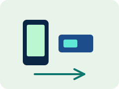

What electronic waste is

Electronic waste, or e-waste, is discarded equipment that uses electricity or a battery. The Global E-waste Monitor treats this waste stream as both a resource and a hazard because devices contain valuable materials and substances that need controlled handling.